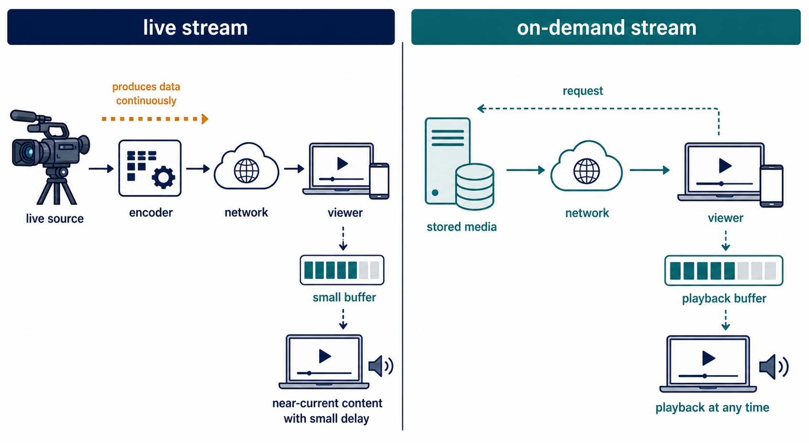

Streaming begins before the complete media file arrives
Visual overview
Streaming starts playback before the complete file arrives

Visual transcript
- Live streaming delivers data close to the time it is produced.
- On-demand streaming delivers stored media when the user requests it.
- Both can use a playback buffer; neither requires the entire file before playback begins.
Establish the concept
Bit streaming delivers an ordered flow of media data progressively so playback can begin before the complete file has arrived.
On-demand streaming sends stored content chosen by the user; the user controls when to begin. Real-time streaming sends content as it is produced, such as a live event, with minimal practical delay.
Both methods may use a buffer. ‘Real-time’ does not mean zero delay, and ‘on-demand’ does not require downloading the complete file first.
Compare how playback receives its content
| Case | Availability and playback | Buffer role |
|---|---|---|
| On-demand streaming | A recorded item exists already; the viewer chooses when to start and may seek to available positions. | Downloaded portions wait for playback; delivery and consumption proceed at the same time. |
| Real-time / live streaming | Content is produced as the event happens, so future content does not yet exist. | A reserve smooths short variations but adds delay behind the live event. |
| Complete download then play | Playback waits for the complete file to be stored. | Network interruptions during later local playback no longer affect delivery of that already downloaded file. |
Separate startup from ongoing playback
Before progressive playback begins, the player can accumulate an initial reserve. With an empty buffer, arrival 6 Mbit/s and a target reserve of 12 Mbit, it takes 12 / 6 = 2 s to fill before playback, ignoring overhead. Consumption is zero during that startup interval. Once playback starts at 4 Mbit/s, arrival and consumption both affect the level.
Connect stored quantity to rate
Bit rate is data per second; buffer content and capacity are quantities of data. Use compatible units: 1 byte is 8 bits. A 4 Mbit/s stream consumes 4 Mbit in each second under the constant-rate model, not 4 megabytes. Compression can reduce the media rate, subject to quality and encoding choices; Lesson 006 supplies that foundation.
Core explanation · Exam essentials
- Streaming starts playback before the entire file arrives; live content is produced as time passes.
- A startup reserve takes time to accumulate; playback then consumes buffered data.